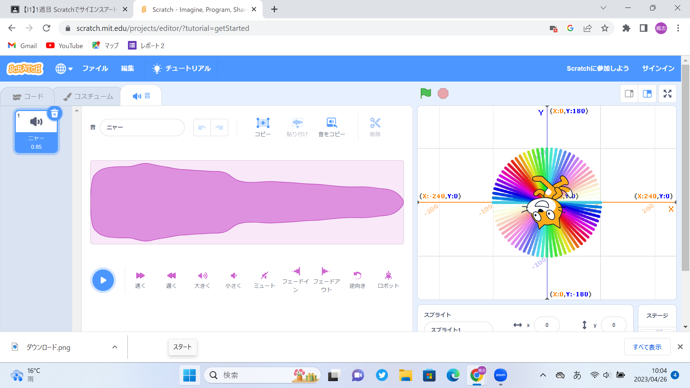
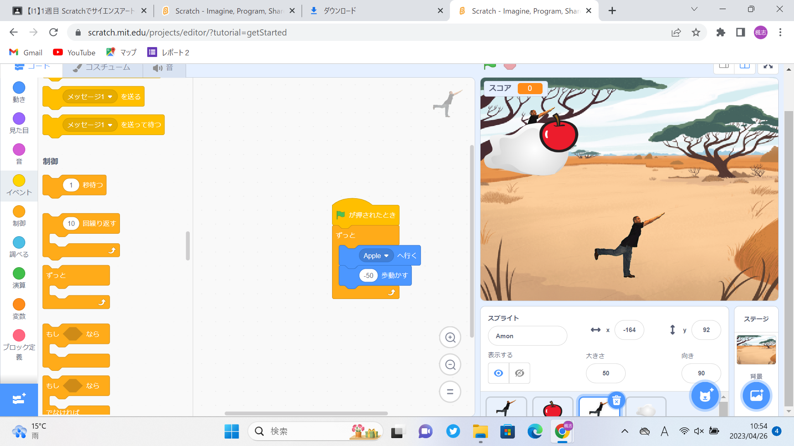

1週目のレポート ： 公大高専１年実習I-1
4a班10番 坂本楓志
第1週目
1-1 サイエンスアート

1.内容
スクラッチを使って線を書くプログラムを学び、さまざまな形をプログラミングで描けるようになる。
2.感想
スクラッチのプログラミングをしたことがなかったので、最初の操作に戸惑った。猫を動かすにも複数のプログラムが組み合わせたり、 線を描くにも一つ一つ細かいプログラムが必要だったり、一つの動作に複数のプログラムを組みあわせなければいけないのが面白かった。 手順が紙にまとめられているので、ホワイトボードが見えなくても手順を確認でき、とてもありがたかった。
1-2 ゲーム

1.内容
スクラッチを使って、物の動きや効果音のつけ方、不規則的に物の動く速さや出現場所を変えたりするプログラミングや、 物と物との間に当たり判定を加えるプログラミングを学び、それらを組み立てゲームを作る。
2.感想
組み立てに多くの手順が必要で少し難しかった。一つの動作や仕組みを加えるたびに複数のプログラムが必要で、 新たな要素を加えるにはいろいろ試してみる必要がありたいへんだったが、うまくいったときは面白かった。
1-3 ホームページ作成
私のホームページ
1.内容
Githubを使って、自分のホームページを作り、編集し、ウェブとしてネットにあげる。
2.感想
手順が紙にまとめられていたり、質問があった場合教員がすぐに駆けつけてくれたのでとても授業は受けやすかった。 自分で作成・編集したホームページがウェブに残るのは、少し不思議な気分だった。ホームページ作りの基礎を学べ、 今後使う場面来る可能性が高い知識を得れて、とてもよかった。